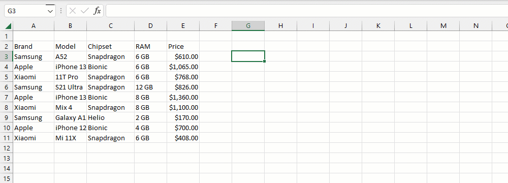

VD1: Tìm kiếm theo 2 Điều kiện gồm Tên điện thoại: SAMSUNG và Giá thành: > 500$.
VD2: Tìm kiếm theo 2 Điều kiện gồm Tên khách hàng và khoảng Thời gian. (file VLOOKUPS_140923.xlsx (Dropbox))
=IF(J2="","",VLOOKUPS(A2:F250,,3,"*"&J2&"*",2,">="&J3,2,"<="&J4))
1. Giá trị tìm kiếm (criteria) và dữ liệu cột tìm kiếm phải tương đồng về kiểu dữ liệu.
2. Cho phép nhiều tiêu chí không giới hạn.
3. Hỗ trợ nhiều bộ lọc bao gồm Wildcard, Operator, RegEx.
Related function
VLOOKUP Tìm kiếm nhiều điều kiện trên một cột, trả về tất cả giá trị.
Return to Home